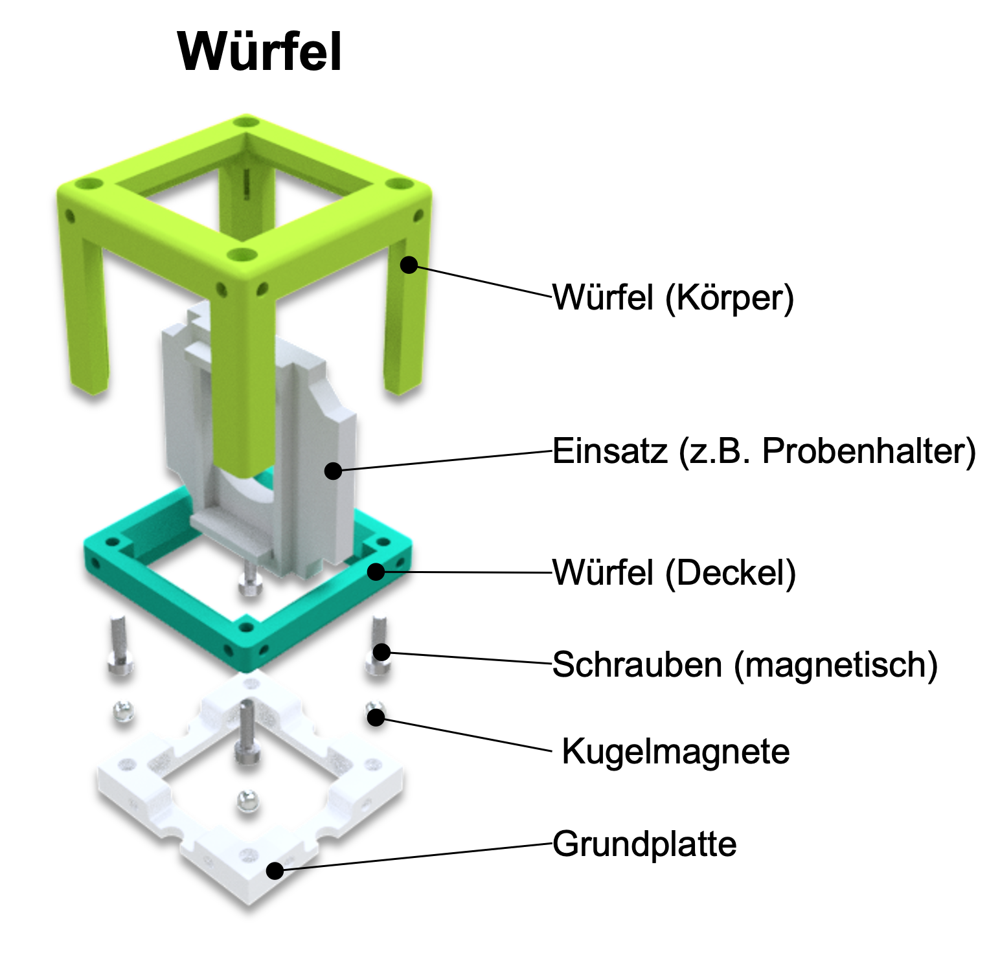

Probenhalter: hält ein Objekt fest in einem Würfel\ Linse: beeinflusst die Weise wie das Licht propagiert (ausgebreitet) wird\ Spiegel: Reflektiert das Licht\ Mikroskopobjektiv: ein spezielles Linsensystem, welches ein Objekt vergrößert

Das Kernelement des UC2-Projekts ist ein einfacher Würfel. Der Würfel besteht aus zwei Hälften und beherbergt einen verschiebbaren Einsatz. Der Einsatz kann verschiedene optische Komponenten (z.B. Linsen, Spiegel) halten, womit sich mit jedem Würfel unterschiedliche Funktionen realisieren lassen.
Würfeltyp 1: Spritzguss mit Steckverbindung
Grundplatte

Grundplatte
Der Würfel lässt sich auf eine Grundplatte montieren. Die Grundplattenmodule lassen sich wie Puzzle zusammenstecken.

Der UC2-Würfel lässt sich auch 3D-drucken. Er sieht genauso aus wie das Spritzgussmodell, besteht hier aber aus einem Würfel-Deckel und dem Würfel-Körper, die mit Schrauben zusammengehalten werden. Die Schrauben eignen sich super dafür, auf die magnetischen Platte gesteckt zu werden. Durch Kombination verschiedener Würfelmodule lassen sich ganz einfach verschiedene optische Aufbauten zusammenbauen. Mit jedem Würfel kann eine neue Funktion hinzugefügt werden. Deiner Kreativität sind keine Grenzen gesetzt.
Würfeltyp 2: 3D gedruckt mit Magnetverbindung
Würfel

Grundplatte mit Magneten
In der 3D gedruckten Grundplatte sind kleine Kugelmagnete auf die die Würfel gesteckt werden.

Willst du mehr Würfel haben? Dann kannst du sie selbst bauen. Du findest alles hier
Achte darauf, dass die Würfel richtig auf der Platte stecken und nicht verkippt sind. Am Ende ist es wichtig, dass die Einsätze an der richtigen Stelle sitzen.

Wenn du kein scharfes Bild siehst, verschiebe die Einsätze (z.B. Linse) so lange, bis du es klar siehst. Der grüne Pfeil im Bild zeigt dir, wie das geht.

Checkout the official documentation here: Codelab Formatting Guide